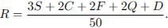
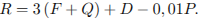
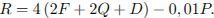
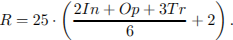

Тип Условие Ответ B4 316047. Автомобильный журнал определяет рейтинги автомобилей на основе показателей безопасности
, комфорта
, функциональности
, качества
и дизайна
. Каждый отдельный показатель оценивается по 5-балльной шкале. Рейтинг
вычисляется по формуле

В таблице даны оценки каждого показателя для трёх моделей автомобилей. Определите наивысший рейтинг представленных в таблице моделей автомобилей.
Модель автомобиля Безопасность Комфорт Функциональность Качество Дизайн А 3 5 2 5 2 Б 4 2 4 1 5 В 5 3 4 5 2
Тип Условие Ответ B4 319557. Рейтинговое агентство определяет рейтинг соотношения «цена-качество» электрических фенов для волос. Рейтинг вычисляется на основе средней цены и оценок функциональности
, качества
и дизайна
. Каждый отдельный показатель оценивается экспертами по пятибалльной шкале целыми числами от 0 до 4. Итоговый рейтинг вычисляется по формуле

В таблице даны оценки каждого показателя для нескольких моделей фенов. Определите, какая модель имеет наименьший рейтинг. В ответ запишите значение этого рейтинга.
Модель фена Средняя цена Функциональность Качество Дизайн А 1200 1 3 1 Б 3200 2 3 4 В 5500 3 0 0 Г 5700 3 2 3
Тип Условие Ответ B4 282833. От дома до дачи можно доехать на автобусе, на электричке или на маршрутном такси. В таблице показано время, которое нужно затратить на каждый участок пути. Какое наименьшее время потребуется на дорогу? Ответ дайте в часах.
1 2 3 Автобусом От дома до автобусной Автобус в пути: От остановки автобуса Электричкой От дома до станции железной Электричка в пути: От станции до дачи Маршрутным такси От дома до остановки маршрутного Маршрутное такси в дороге: От остановки маршрутного такси
Тип Условие Ответ B4 26676. Клиент хочет арендовать автомобиль на сутки для поездки протяженностью 500 км. В таблице приведены характеристики трех автомобилей и стоимость их аренды. Помимо аренды клиент обязан оплатить топливо для автомобиля на всю поездку. Какую сумму в рублях заплатит клиент за аренду и топливо, если выберет самый дешевый вариант?
Автомобиль Топливо Расход топлива (л на 100 км) Арендная плата (руб. за 1 сутки) А Дизельное 7 3700 Б Бензин 10 3200 В Газ 14 3200
Цена дизельного топлива — 19 рублей за литр, бензина — 22 рублей за литр, газа — 14 рублей за литр.
Тип Условие Ответ B4 26685. В таблице даны тарифы на услуги трех фирм такси. Предполагается поездка длительностью 70 минут. Нужно выбрать фирму, в которой заказ будет стоить дешевле всего. Сколько рублей будет стоить этот заказ?
Фирма такси Подача машины Продолжительность и стоимость Стоимость 1 минуты А 350 Нет 13 Б Бесплатно 20 мин. — 300 руб. 19 В 180 10 мин — 150 руб. 15
*Если поездка продолжается меньше указанного времени, она оплачивается по стоимости минимальной поездки.
Тип Условие Ответ B4 500031. Интернет-провайдер (компания, оказывающая услуги по подключению к сети Интернет) предлагает три тарифных плана.
Тарифный план Абонентская плата Плата за трафик План «0» Нет 2,5 руб. за 1 Мб План «500» 550 руб. за 500 Мб трафика в месяц 2 руб. за 1 Мб сверх 500 Мб План «800» 700 руб. за 800 Мб трафика в месяц 1,5 руб. за 1 Мб сверх 800 Мб
Пользователь предполагает, что его трафик составит 650 Мб в месяц и, исходя из этого, выбирает наиболее дешевый тарифный план. Сколько рублей заплатит пользователь за месяц, если его трафик действительно будет равен 650 Мб?
Тип Условие Ответ B4 26684. Строительный подрядчик планирует купить 5 тонн облицовочного кирпича у одного из трех поставщиков. Вес одного кирпича 5 кг. Цены и условия доставки приведены в таблице. Во сколько рублей обойдется наиболее дешевый вариант покупки?
Поставщик Цена кирпича Стоимость доставки Специальные условия А 17 7000 Нет Б 18 6000 Если стоимость заказа выше 50 000 руб., В 19 5000 При заказе свыше 60 000 руб.
Тип Условие Ответ B4 26686. В таблице даны условия банковского вклада в трех различных банках. Предполагается, что клиент кладет на счет 10 000 рублей на срок 1 год. В каком банке к концу года вклад окажется наибольшим? В ответе укажите сумму этого вклада в рублях.
Банк Обслуживание счета * Процентная ставка Банк А 40 руб. в год 2 Банк Б 8 руб. в месяц 3,5 Банк В Бесплатно 1,5
* В начале года или месяца со счета снимается указанная сумма в уплату за ведение счета
Тип Условие Ответ B4 77362. В среднем гражданин А. в дневное время расходует 120 кВт
ч электроэнергии в месяц, а в ночное время — 185 кВт
ч электроэнергии. Раньше у А. в квартире был установлен однотарифный счетчик, и всю электроэнергию он оплачивал по тарифу 2,40 руб. за кВт
ч. Год назад А. установил двухтарифный счётчик, при этом дневной расход электроэнергии оплачивается по тарифу 2,40 руб. за кВт
ч, а ночной расход оплачивается по тарифу 0,60 руб. за кВт
ч. В течение 12 месяцев режим потребления и тарифы оплаты электроэнергии не менялись. На сколько больше заплатил бы А. за этот период, если бы не поменялся счетчик? Ответ дайте в рублях.
Тип Условие Ответ B4 319558. Рейтинговое агентство определяет рейтинг соотношения «цена-качество» микроволновых печей. Рейтинг вычисляется на основе средней цены и оценок функциональности
, качества
и дизайна
. Каждый отдельный показатель оценивается экспертами по 5-балльной шкале целыми числами от 0 до 4. Итоговый рейтинг вычисляется по формуле
В таблице даны оценки каждого показателя для нескольких моделей печей. Определите, какая модель имеет наивысший рейтинг. В ответ запишите значение этого рейтинга.
Модель печи Средняя цена Функциональность Качество Дизайн А 1900 1 1 1 Б 5900 4 1 2 В 3800 0 0 1 Г 4100 2 0 4
Тип Условие Ответ B4 77361. В таблице указаны средние цены (в рублях) на некоторые основные продукты питания в трех городах России (по данным на начало 2010 года).
Наименование продукта Тверь Липецк Барнаул Пшеничный хлеб (батон) 11 12 14 Молоко (1 литр) 26 23 25 Картофель (1 кг) 9 13 16 Сыр (1 кг) 240 215 260 Мясо (говядина) 260 280 300 Подсолнечное масло (1 литр) 38 44 50
Определите, в каком из этих городов окажется самым дешевым следующий набор продуктов: 2 батона пшеничного хлеба, 3 кг картофеля, 1,5 кг говядины, 1 л подсолнечного масла. В ответ запишите стоимость данного набора продуктов в этом городе (в рублях).
Тип Условие Ответ B4 245557. Мебельный салон заключает договоры с производителями мебели. В договорах указывается, какой процент от суммы, вырученной за продажу мебели, поступает в доход мебельного салона.
Фирма-производитель Процент от выручки,
Примечания «Альфа» 6,5 % Изделия ценой до 20 000 руб. «Альфа» 2,5 % Изделия ценой свыше 20 000 руб. «Бета» 3 % Все изделия «Омикрон» 5 % Все изделия
В прейскуранте приведены цены на четыре кресла-качалки. Определите, продажа какого кресла-качалки наиболее выгодна для салона. В ответ запишите, сколько рублей поступит в доход салона от продажи этого кресла-качалки.
Фирма-производитель Изделие Цена «Альфа» Кресло-качалка «Ода» 16 500 руб. «Альфа» Кресло-качалка «Сага» 23 500 руб. «Бета» Кресло-качалка «Поэма» 20 500 руб. «Омикрон» Кресло-качалка «Элегия» 18 000 руб.
Тип Условие Ответ B4 26675. Для остекления музейных витрин требуется заказать 20 одинаковых стекол в одной из трех фирм. Площадь каждого стекла 0,25 м
2 . В таблице приведены цены на стекло и на резку стекол. Сколько рублей будет стоить самый дешевый заказ?
Фирма Цена стекла2 ) Резка стекла Дополнительные условия A 300 17 Б 320 13 В 340 8 При заказе на сумму больше 2500 руб.
Тип Условие Ответ B4 500636. Рейтинговое агентство определяет рейтинг соотношения «цена-качество» микроволновых печей. Рейтинг начисляется на основе средней цены
P и оценок функциональности
F , качества
Q и дизайна
D . Каждый отдельный показатель оценивается экспертами по 5-балльной шкале целыми числами от 0 до 4. Итоговый рейтинг вычисляется по формуле
В таблице даны оценки каждого показателя для нескольких моделей печей. Определите, какая модель имеет наивысший рейтинг. В ответ запишите значение этого рейтинга.
Модель печи Средняя цена Функциональность Качество Дизайн А 5800 2 2 4 Б 4200 1 0 1 В 4300 4 3 2 Г 3900 2 0 3
Тип Условие Ответ B4 316048. Независимая экспертная лаборатория определяет рейтинг
бытовых приборов на основе коэффициента ценности, равного 0,01 средней цены , показателей функциональности
, качества
и дизайна
. Каждый из показателей оценивается целым числом от 0 до 4. Итоговый рейтинг вычисляется по формуле

В таблице даны средняя цена и оценки каждого показателя для нескольких моделей электрических мясорубок. Определите наивысший рейтинг представленных в таблице моделей электрических мясорубок.
Модель мясорубки Средняя цена Функциональность Качество Дизайн А 4600 2 0 2 Б 5500 4 3 1 В 4800 4 4 4 Г 4700 2 1 4
Тип Условие Ответ B4 500633. Независимая экспертная лаборатория определяет рейтинги бытовых приборов
R на основе средней цены
P , а также оценок функциональности
F , качества
Q и дизайна
D . Каждый отдельный показатель оценивается экспертами по 5-балльной шкале целыми числами от 0 до 4. Итоговый рейтинг вычисляется по формуле
В таблице даны оценки каждого показателя для нескольких моделей электрических мясорубок. Определите, какая модель имеет наивысший рейтинг. В ответ запишите значение этого рейтинга.
Модель мясорубки Средняя цена Функциональность Качество Дизайн А 4800 4 1 4 Б 3700 2 2 2 В 3800 4 4 2 Г 6000 4 1 3
Тип Условие Ответ B4 26673. Интернет-провайдер (компания, оказывающая услуги по подключению к сети Интернет) предлагает три тарифных плана.
Тарифный план Абонентская плата Плата за трафик План «0» Нет 2,5 руб. за 1 Мб План «500» 550 руб. за 500 Мб трафика в месяц 2 руб. за 1 Мб сверх 500 Мб План «800» 700 руб. за 800 Мб трафика в месяц 1,5 руб. за 1 Мб сверх 800 Мб
Пользователь предполагает, что его трафик составит 600 Мб в месяц и, исходя из этого, выбирает наиболее дешевый тарифный план. Сколько рублей заплатит пользователь за месяц, если его трафик действительно будет равен 600 Мб?
Тип Условие Ответ B4 77357. Мебельный салон заключает договоры с производителями мебели. В договорах указывается, какой процент от суммы, вырученной за продажу мебели, поступает в доход мебельного салона.
Фирма-производитель Процент от выручки, Примечания «Альфа» 5% Изделия ценой «Альфа» 3% Изделия ценой «Бета» 6% Все изделия «Омикрон» 4% Все изделия
В прейскуранте приведены цены на четыре дивана. Определите, продажа какого дивана наиболее выгодна для салона. В ответ запишите, сколько рублей поступит в доход салона от продажи этого дивана.
Фирма-производитель Изделие Цена «Альфа» Диван «Коала» 15 000 руб. «Альфа» Диван «Неваляшка» 28 000 руб. «Бета» Диван «Винни-Пух» 17 000 руб. «Омикрон» Диван «Обломов» 23 000 руб.
Тип Условие Ответ B4 316049. Независимое агентство каждый месяц определяет рейтинги
новостных сайтов на основе показателей информативности
, оперативности
и объективности публикаций. Каждый отдельный показатель оценивается целыми числами от −2 до 2. Итоговый рейтинг вычисляется по формуле

В таблице даны оценки каждого показателя для нескольких новостных сайтов. Определите наивысший рейтинг новостных сайтов, представленных в таблице. Запишите его в ответ, округлив до целого числа.
Сайт Информативность Оперативность Объективность VoKak.ru 2 −1 0 NashiNovosti.com −2 1 −1 Bezvrak.ru 2 2 0 Zhizni.net −1 −1 −2
Тип Условие Ответ B4 26677. Телефонная компания предоставляет на выбор три тарифных плана.
Тарифный план Абонентская плата Плата за 1 минуту разговора Повременный 135 руб. в месяц 0,3 руб. Комбинированный 255 руб. за 450 мин. в месяц 0,28 руб. за 1 мин. сверх 450 мин. в месяц Безлимитный 380 руб. в месяц
Абонент выбрал наиболее дешевый тарифный план, исходя из предположения, что общая длительность телефонных разговоров составляет 650 минут в месяц. Какую сумму он должен заплатить за месяц, если общая длительность разговоров в этом месяце действительно будет равна 650 минут? Ответ дайте в рублях.